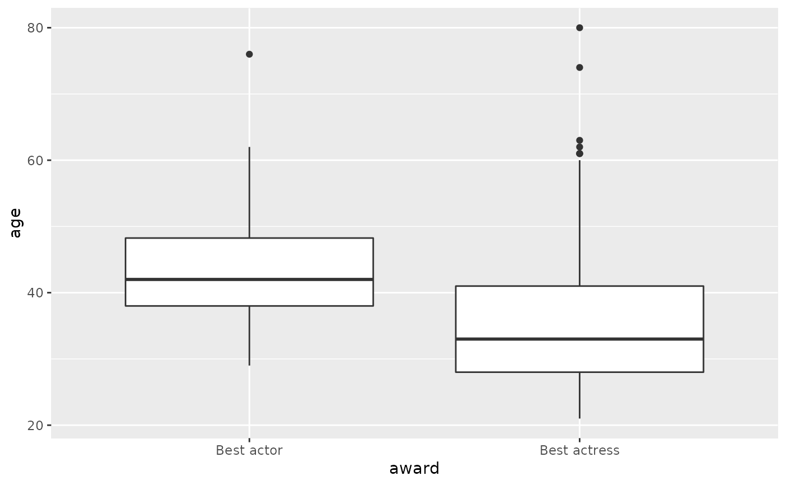
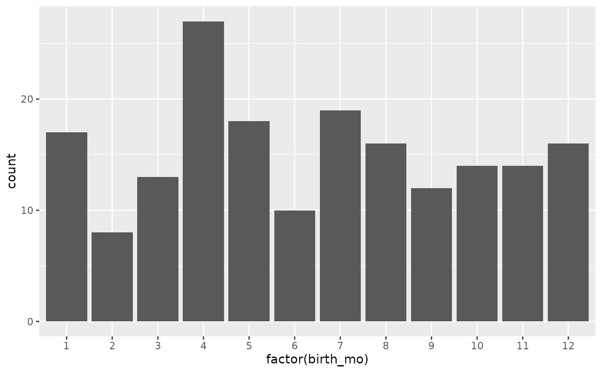

Best actor and actress Oscar winners from 1929 to 2018
oscars
A data frame with 182 observations on the following 10 variables.
Oscar ceremony number.
Year the Oscar ceremony was held.
Best actress or Best actor.
Name of winning actor or actress.
Name of movie actor or actress got the Oscar for.
Age at which the actor or actress won the Oscar.
US State where the actor or actress was born, country if foreign.
Birth date of actor or actress.
Birth month of actor or actress.
Birth day of actor or actress.
Birth year of actor or actress.
Journal of Statistical Education, http://jse.amstat.org/datasets/oscars.dat.txt, updated through 2019 using information from Oscars.org and Wikipedia.org.
Although there have been only 84 Oscar ceremonies until 2012, there are 85 male winners and 85 female winners because ties happened on two occasions (1933 for the best actor and 1969 for the best actress).
#> # A tibble: 51 x 2 #> birth_pl n #> <chr> <int> #> 1 England 29 #> 2 California 25 #> 3 New York 23 #> 4 Connecticut 5 #> 5 Illinois 5 #> 6 Pennsylvania 5 #> 7 Massachusetts 4 #> 8 Missouri 4 #> 9 New Jersey 4 #> 10 Ohio 4 #> # … with 41 more rows